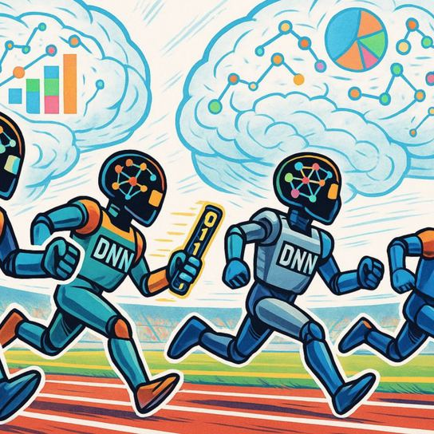

- NeurIPS 2025
- CCN 2025 · Talk

Model–Behavior Alignment under Flexible Evaluation: When the Best-Fitting Model Isn’t the Right One
Summary To test whether a vision model represents images the way people do, researchers often fit a flexible linear mapping from the model’s features to human judgments and compare how well each model predicts. We simulated responses from each of 20 models fitted to 4.5 million odd-one-out judgments from the THINGS dataset and found that this comparison picked the model that had generated the data less than 80% of the time, even with millions of trials.